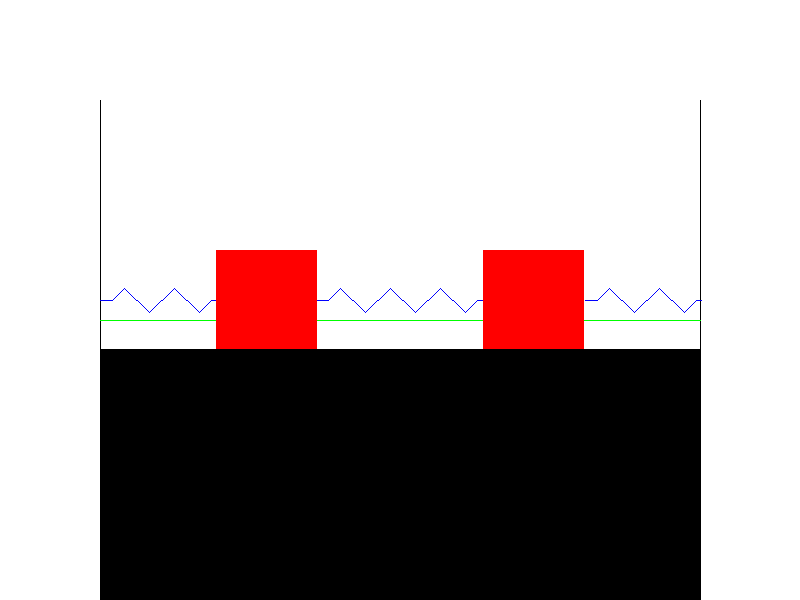
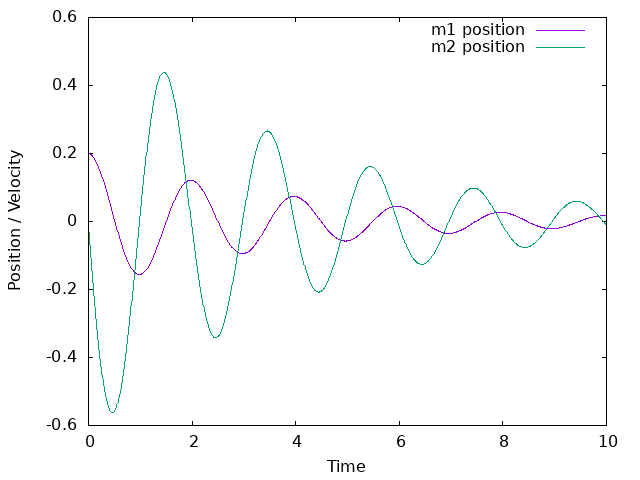

w15 <<
Previous Next >> ANSIC
w16
Q.1
#include <gd.h>
#include <stdio.h>
#include <math.h>
#define WIDTH 800
#define HEIGHT 600
#define SCALE 100
//繪製電阻形狀
void drawResistor(gdImagePtr im, int x1, int y, int width, int height) {
int startX = x1 ;
int endX = x1 + width ;
// 第一段直線向前走一段
gdImageLine(im, startX, y, startX + width / 4 , y, gdImageColorAllocate(im, 0, 0, 255));
// 向上45度
gdImageLine(im, startX + width / 4 , y, startX + width / 4 + height / 2 , y - height / 2, gdImageColorAllocate(im, 0, 0, 255));
// 向下90度
gdImageLine(im, startX + width / 4 + height / 2, y - height / 2 , startX + width / 4 + height / 2 + height , y + height / 2, gdImageColorAllocate(im, 0, 0, 255));
// 向上90度
gdImageLine(im, startX + width / 4 + height / 2 + height, y + height / 2, startX + width / 4 + height / 2 + 2 * height, y - height / 2, gdImageColorAllocate(im, 0, 0, 255));
// 向下90度
gdImageLine(im, startX + width / 4 + height / 2 + 2 * height , y - height / 2, startX + width / 4 + height / 2 + 3 * height , y + height / 2, gdImageColorAllocate(im, 0, 0, 255));
// 向上90度
gdImageLine(im, startX + width / 4 + height / 2 + 3 * height, y + height / 2 , startX + width / 4 + height / 2 + 4 * height, y - height / 2, gdImageColorAllocate(im, 0, 0, 255));
// 向下90度
gdImageLine(im, startX + width / 4 + height / 2 + 4 * height, y - height / 2, startX + width / 4 + height / 2 + 5 * height, y + height / 2, gdImageColorAllocate(im, 0, 0, 255));
// 向上45度
gdImageLine(im, startX + width / 4 + height / 2 + 5 * height, y + height / 2, startX + width / 4 + height / 2 + 5 * height + height / 2, y, gdImageColorAllocate(im, 0, 0, 255));
gdImageLine(im, startX + width / 4 + height / 2 + 5 * height + height / 2, y, startX + width / 4 + height / 2 + 5 * height + height / 2 +5 , y, gdImageColorAllocate(im, 0, 0, 255));
{
int startX = 100;
gdImageColorAllocate(im, 0, 0, 255);
// 第一段直線向前走一段
gdImageLine(im, startX, y, startX + width / 4 , y, gdImageColorAllocate(im, 0, 0, 255));
// 向上45
gdImageLine(im, startX + width / 4 , y, startX + width / 4 + height / 2 , y - height / 2, gdImageColorAllocate(im, 0, 0, 255));
// 向下90度
gdImageLine(im, startX + width / 4 + height / 2, y - height / 2 , startX + width / 4 + height / 2 + height , y + height / 2, gdImageColorAllocate(im, 0, 0, 255));
// 向上90度
gdImageLine(im, startX + width / 4 + height / 2 + height, y + height / 2, startX + width / 4 + height / 2 + 2 * height, y - height / 2, gdImageColorAllocate(im, 0, 0, 255));
// 向下90度
gdImageLine(im, startX + width / 4 + height / 2 + 2 * height , y - height / 2, startX + width / 4 + height / 2 + 3 * height , y + height / 2, gdImageColorAllocate(im, 0, 0, 255));
// 向上45度
gdImageLine(im, startX + width / 4 + height / 2 + 3 * height, y + height / 2, startX + width / 4 + height / 2 + 3 * height + height / 2, y, gdImageColorAllocate(im, 0, 0, 255));
gdImageLine(im, startX + width / 4 + height / 2 + 3 * height + height / 2, y, startX + width / 4 + height / 2 + 3 * height + height / 2 +5 , y, gdImageColorAllocate(im, 0, 0, 255));
}
{
int startX = 585;
gdImageColorAllocate(im, 0, 0, 255);
// 第一段直線向前走一段
gdImageLine(im, startX, y, startX + width / 4 , y, gdImageColorAllocate(im, 0, 0, 255));
// 向上45度
gdImageLine(im, startX + width / 4 , y, startX + width / 4 + height / 2 , y - height / 2, gdImageColorAllocate(im, 0, 0, 255));
// 向下90度
gdImageLine(im, startX + width / 4 + height / 2, y - height / 2 , startX + width / 4 + height / 2 + height , y + height / 2, gdImageColorAllocate(im, 0, 0, 255));
// 向上90度
gdImageLine(im, startX + width / 4 + height / 2 + height, y + height / 2, startX + width / 4 + height / 2 + 2 * height, y - height / 2, gdImageColorAllocate(im, 0, 0, 255));
// 向下90度
gdImageLine(im, startX + width / 4 + height / 2 + 2 * height , y - height / 2, startX + width / 4 + height / 2 + 3 * height , y + height / 2, gdImageColorAllocate(im, 0, 0, 255));
// 向上45度
gdImageLine(im, startX + width / 4 + height / 2 + 3 * height, y + height / 2, startX + width / 4 + height / 2 + 3 * height + height / 2, y, gdImageColorAllocate(im, 0, 0, 255));
gdImageLine(im, startX + width / 4 + height / 2 + 3 * height + height / 2, y, startX + width / 4 + height / 2 + 3 * height + height / 2 +5 , y, gdImageColorAllocate(im, 0, 0, 255));
gdImageLine(im, 100, y +20, 700, y +20, gdImageColorAllocate(im, 0, 255, 0));
}
}
int main() {
gdImagePtr im;
FILE *outputFile;
// 創建圖像物件
im = gdImageCreateTrueColor(WIDTH, HEIGHT);
if (im == NULL) {
fprintf(stderr, "Error creating GD image.\n");
return 1;
}
outputFile = fopen("1.png", "wb");
if (outputFile == NULL) {
fprintf(stderr, "Error opening the output file.\n");
return 1;
}
//配置顏色
int black, white, red, blue, green;
black = gdImageColorAllocate(im, 0, 0, 0);
white = gdImageColorAllocate(im, 255, 255, 255);
red = gdImageColorAllocate(im, 255, 0, 0);
blue = gdImageColorAllocate(im, 0, 0, 255);
green = gdImageColorAllocate(im, 0, 255, 0);
gdImageFilledRectangle(im, 0, 0, WIDTH - 1, HEIGHT - 1, white);
// 繪製牆面
gdImageLine(im, SCALE, SCALE, SCALE, HEIGHT - SCALE, black);
gdImageLine(im, WIDTH - SCALE, SCALE, WIDTH - SCALE, HEIGHT - SCALE, black);
// 繪製彈簧(電阻)
drawResistor(im, WIDTH / 3 + SCALE / 2, HEIGHT / 2, SCALE / 2, SCALE / 4);
// 繪製質量（方形）
gdImageFilledRectangle(im, WIDTH / 3 - SCALE / 2, HEIGHT / 2 - SCALE / 2, WIDTH / 3 + SCALE / 2, HEIGHT / 2 + SCALE / 2, red);
gdImageFilledRectangle(im, WIDTH * 2 / 3 - SCALE / 2, HEIGHT / 2 - SCALE / 2, WIDTH * 2 / 3 + SCALE / 2, HEIGHT / 2 + SCALE / 2, red);
gdImageFilledRectangle(im, 100, HEIGHT +300, 700, HEIGHT /2 +49 , black);
//生成圖片
gdImagePng(im, outputFile);
fclose(outputFile);
gdImageDestroy(im);
return 0;
}

Q.2
#include <stdio.h>
// System parameters
#define M1 2.0
#define M2 3.0
#define K1 0.5
#define K2 1.0
#define K3 15.0
#define C1 0.25
#define C2 0.33
#define C3 0.5
// Function to calculate the derivative of the state
void calculate_derivative(double t, double state[4], double derivative[4]) {
derivative[0] = state[2]; // dx1/dt = v1
derivative[1] = state[3]; // dx2/dt = v2
double delta_x = state[0] - state[1];
// dv1/dt
derivative[2] = -(K1 * state[0] + K2 * delta_x) / M1;
// dv2/dt
derivative[3] = -(K3 * state[1] - K2 * delta_x) / M2;
}
// Euler's Method for solving the system
void euler_method(double t_initial, double t_final, double dt, double initial_conditions[4]) {
FILE *output_file;
output_file = fopen("trajectory_data.txt", "w");
double t = t_initial;
double state[4];
for (int i = 0; i < 4; ++i) {
state[i] = initial_conditions[i];
}
while (t <= t_final) {
fprintf(output_file, "%f %f %f %f %f\n", t, state[0], state[1], state[2], state[3]);
double derivative[4];
calculate_derivative(t, state, derivative);
for (int i = 0; i < 4; ++i) {
state[i] += derivative[i] * dt;
}
t += dt;
}
fclose(output_file);
}
int main() {
// Define the initial conditions
double initial_conditions[4] = {1.0, -0.5, 0.0, 0.0}; // x1, x2, v1, v2
// Time parameters
double t_initial = 0.0;
double t_final = 10.0;
double dt = 0.01;
// Solve the system using Euler's Method
euler_method(t_initial, t_final, dt, initial_conditions);
return 0;
}
#include <stdio.h>
int main() {
FILE *gnuplotPipe = popen("gnuplot", "w");
if (gnuplotPipe) {
fprintf(gnuplotPipe, "set terminal png\n");
fprintf(gnuplotPipe, "set output 'motion_plot.png'\n");
fprintf(gnuplotPipe, "set xlabel 'Time'\n");
fprintf(gnuplotPipe, "set ylabel 'Position / Velocity'\n");
fprintf(gnuplotPipe, "plot 'motion_data.txt' using 1:2 with lines title 'm1 position', 'motion_data.txt' using 1:3 with lines title 'm2 position', 'motion_data.txt' using 1:4 with lines title 'm1 velocity', 'motion_data.txt' using 1:5 with lines title 'm2 velocity'\n");
fprintf(gnuplotPipe, "exit\n");
fflush(gnuplotPipe);
pclose(gnuplotPipe);
} else {
printf("Error opening pipe to Gnuplot.\n");
}
return 0;
}

w15 <<
Previous Next >> ANSIC